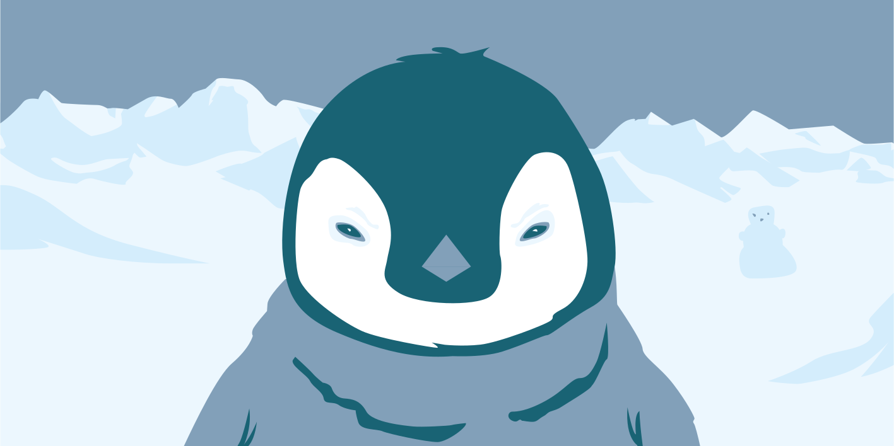
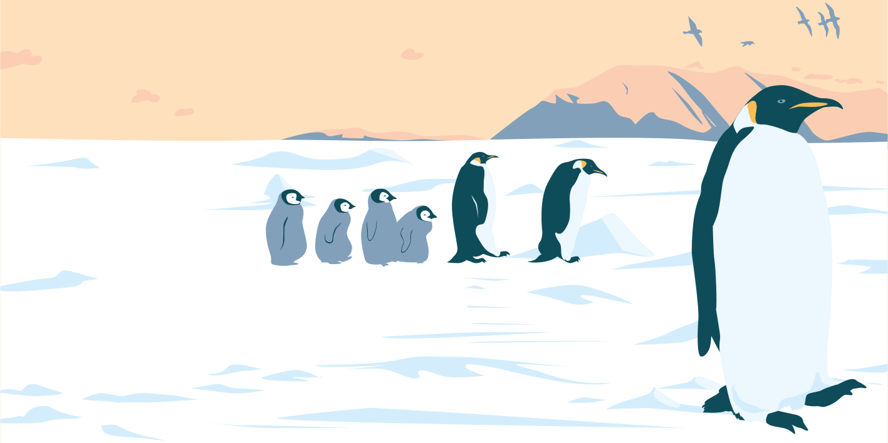
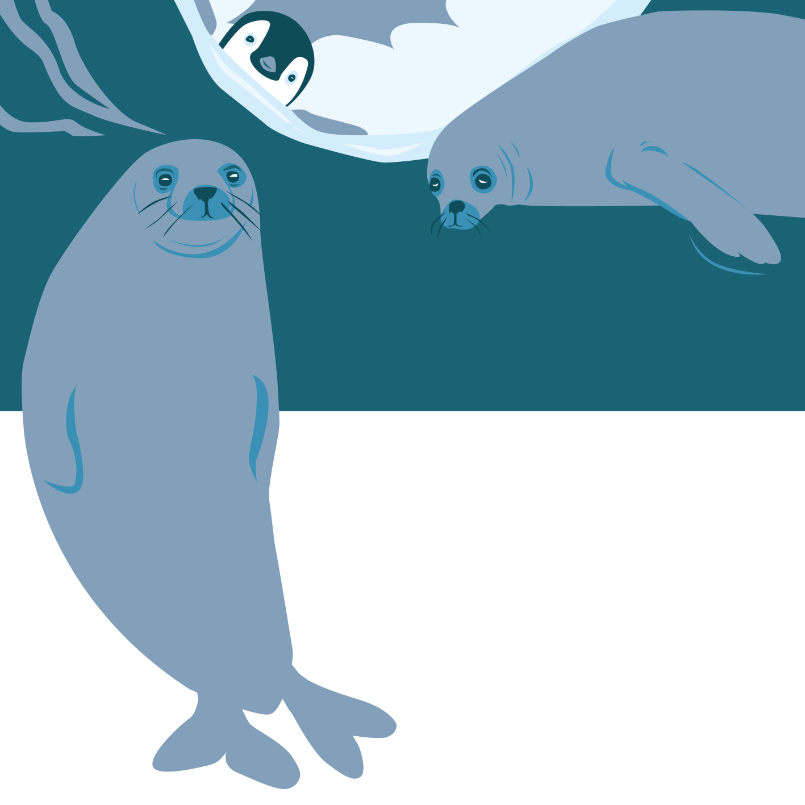
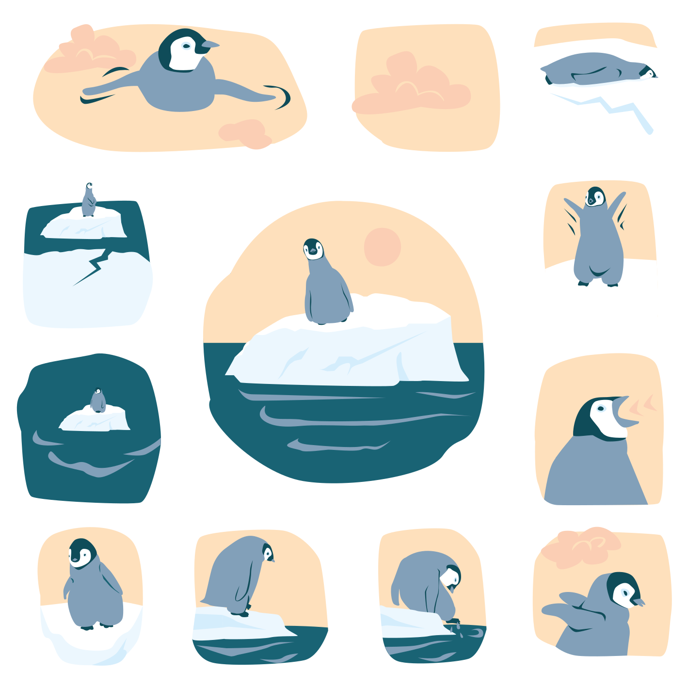
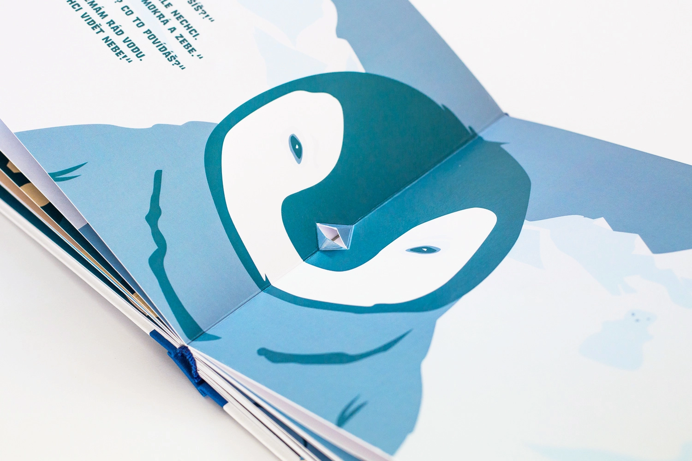
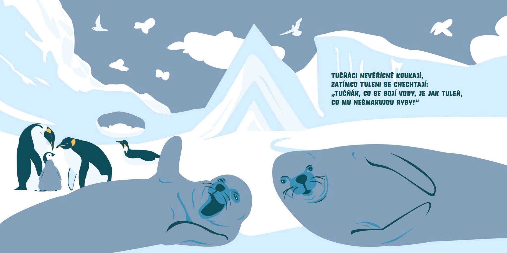
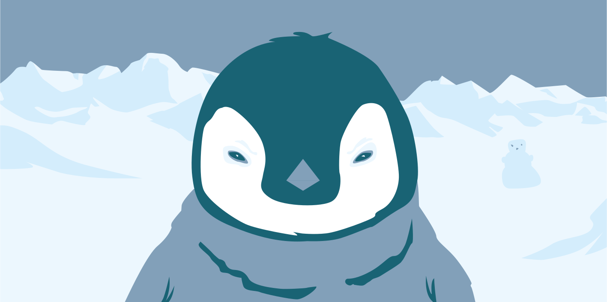
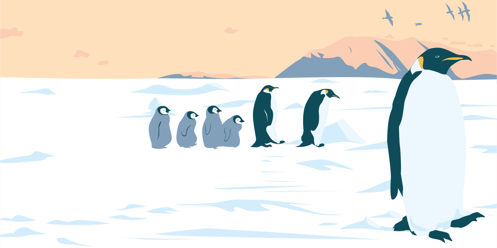
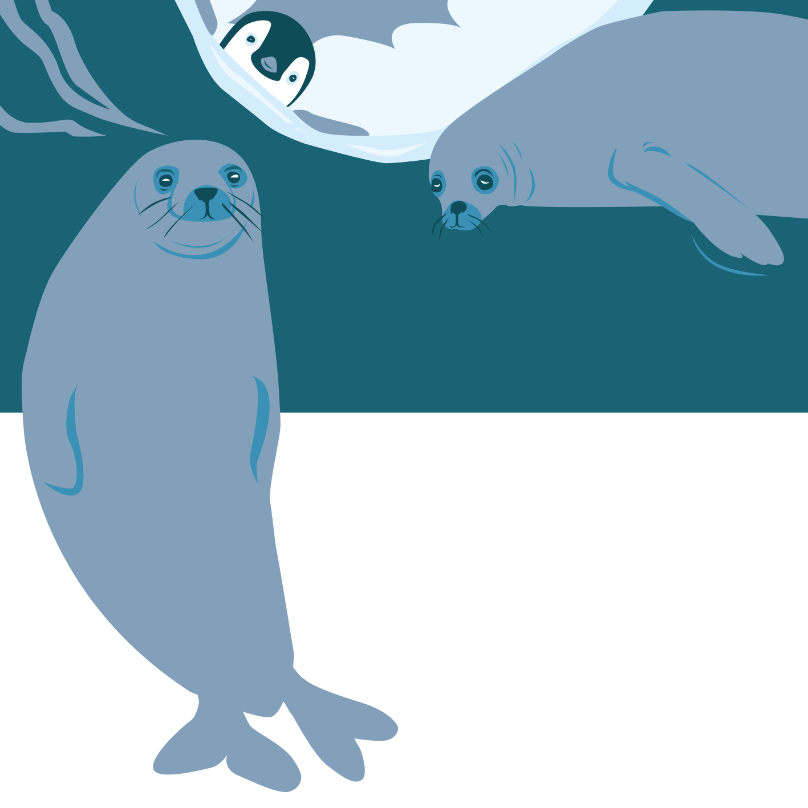
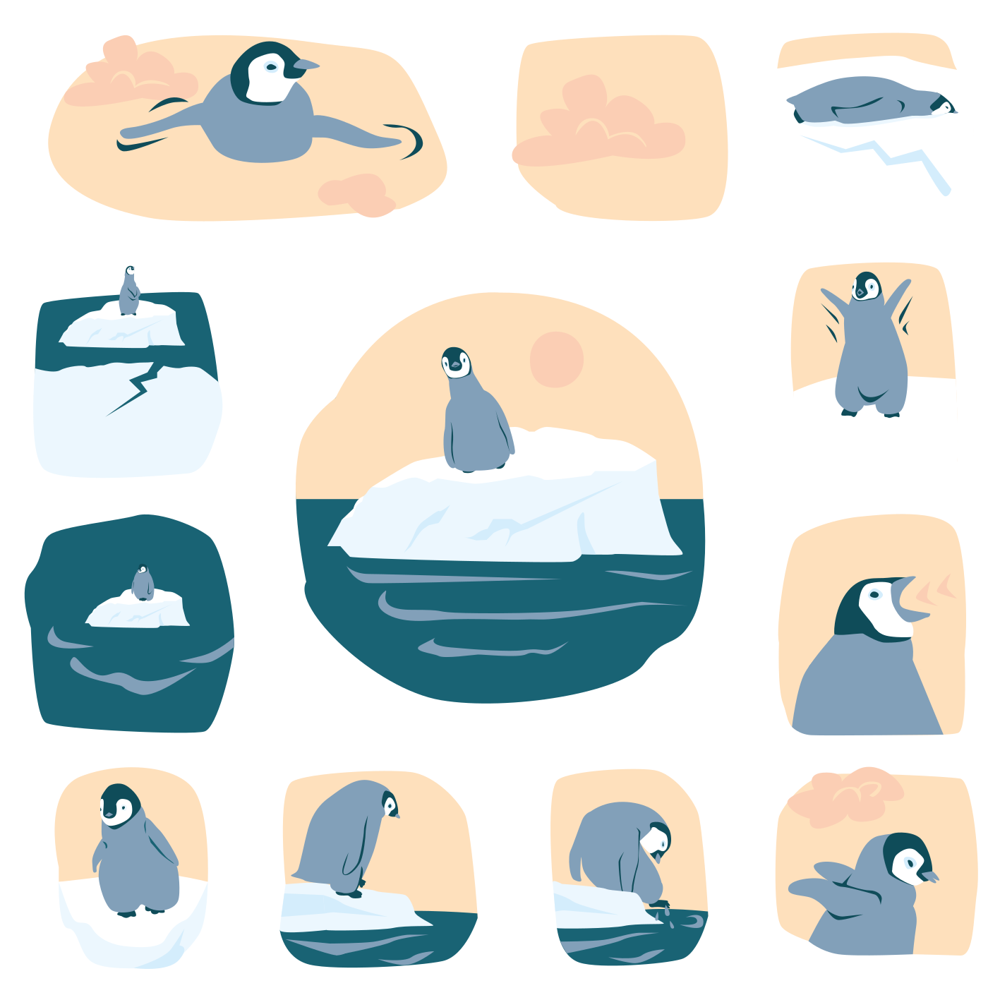
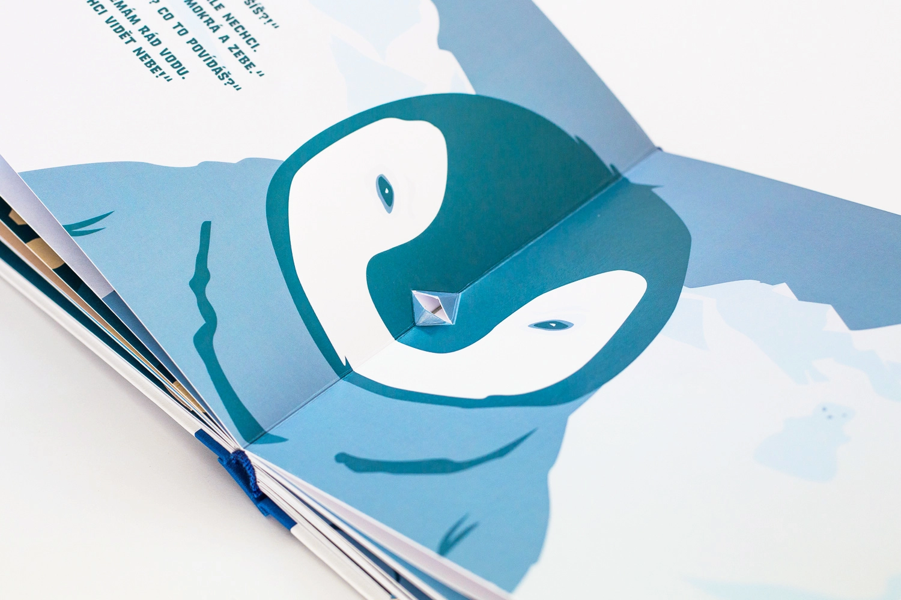
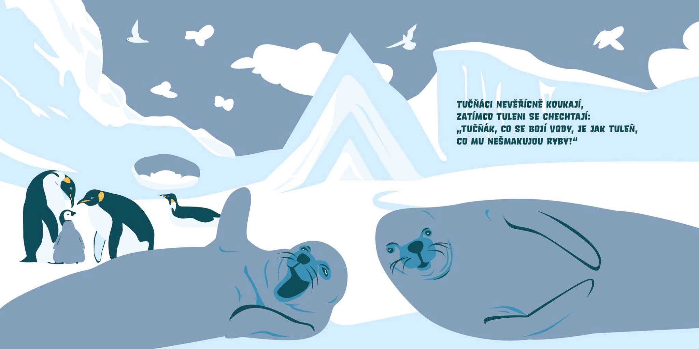
Oskare, plav!
Kniha Oskare, plav! vypráví příběh malého tučňáka Oskara, který překonává svůj strach z plavání. Příběh je hravý a motivující, určený dětem, které se potýkají s vlastními obavami a učí se novým dovednostem.
Jsem autorkou nejen ilustrací, ale také samotného námětu knihy. Ilustrace jsou vytvořeny ve vektorové grafice a dominují jim tóny modré a oranžové, které podtrhují kontrast mezi ledovým světem tučňáků a vřelostí Oskarova příběhu. Kniha je navíc oživena pop-up prvky na každé stránce, což přidává čtení další rozměr a zvyšuje interaktivní zážitek dětí.
Kniha Oskare, plav! byla oceněna za svou originalitu a zařazena do katalogu Nejlepší knihy dětem, který vybírá výjimečné publikace pro mladé čtenáře.
Nakladatelství: POP-PAP
Autor textu: Lukáš Csicsely
Grafická úprava: Tereza Šmídová